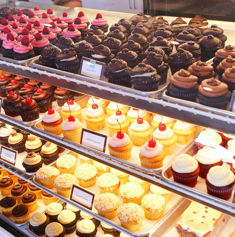

Welcome to AKA Cupcakes
Stop by and have a taste of our award winning cupcakes!
- Named "Most Indulgent Treat" by Nashville Scene's "Best of Nashville 2015"
- Named "Best Cupcakes" by the Tennessean's "Toast of Music City 2015"
- Named "Favorite Rainbow Sugar Rush" by Nashville Pride 5 years running!
You'll love our cupcakes and all of the wonderful treats we produce! Let us provide our sugary confections at your next birthday party, bridal shower, reception, or company event! Visit our products page to take a look at all of the exciting things being cooked up in our kitchen!